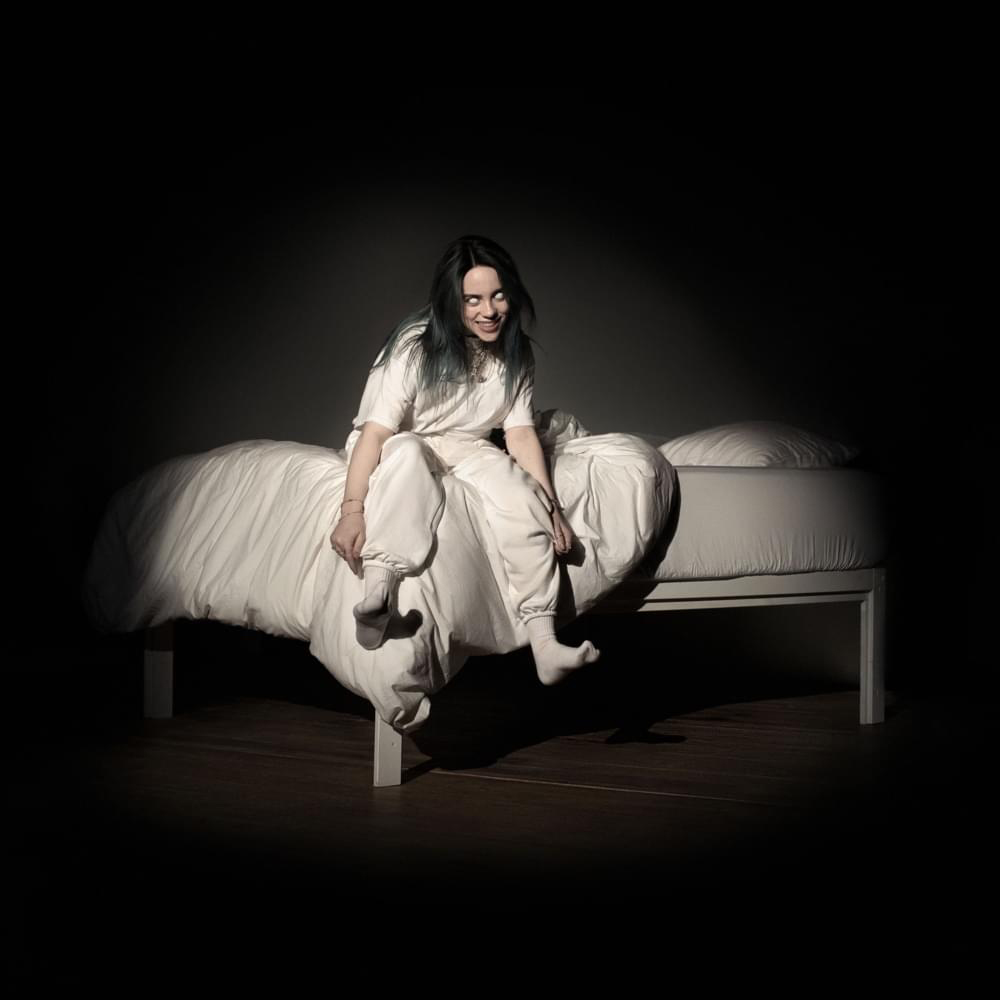

Billie Eilish
Billie Eilish
Dont Smile At Me
Electropop © 2017 Darkroom/InterscopeDon't Smile at Me is the debut extended play by American singer-songwriter Billie Eilish. It was released on August 11, 2017 through Interscope Records, and contains several of her previously released singles, including "Ocean Eyes", "Bellyache", "Watch", "Copycat" and "Idontwannabeyouanymore"
- COPYCAT3:15
- idontwanttobeyouanymore3:24
- My boy2:51
- Watch2:58
- Party Favor3:25
- Bellyache2:59
- Ocean Eyes3:20
- Hostage3:49
- And Burn (with Vince Staples)2:59

Billie Eilish
When We All Fall Asleep, Where Do We Go?
Hard Rock © 2016 Atlantic Recording CorporationUnleashed is the tenth album by American Christian rock band Skillet, released on August 5, 2016. The album was announced on May 20, 2016, and a lyric video was released for the track "Feel Invincible" at the same time on the band's YouTube channel. Six days later, the band released a lyric video for the track "Stars" on their YouTube channel.
- Feel Invincible3:49
- Back From The Dead3:33
- Stars3:47
- I Want To Live3:28
- Undefeated3:35
- Famous3:18
- Lions3:24
- Out Of Hell3:34
- Burn It Down3:16
- Watching For Comets3:29
- Saviors Of The World3:46
- The Resistance3:52